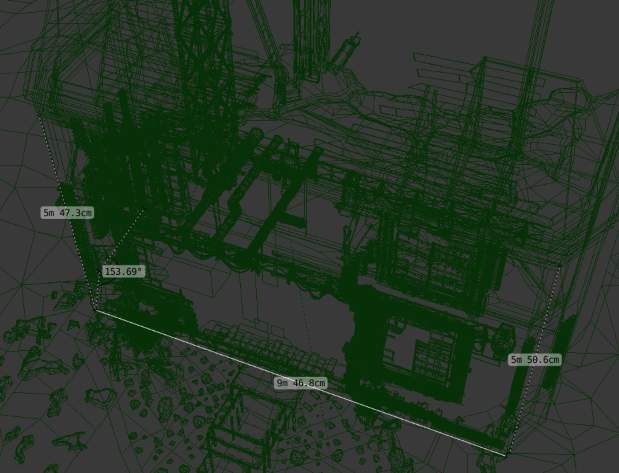
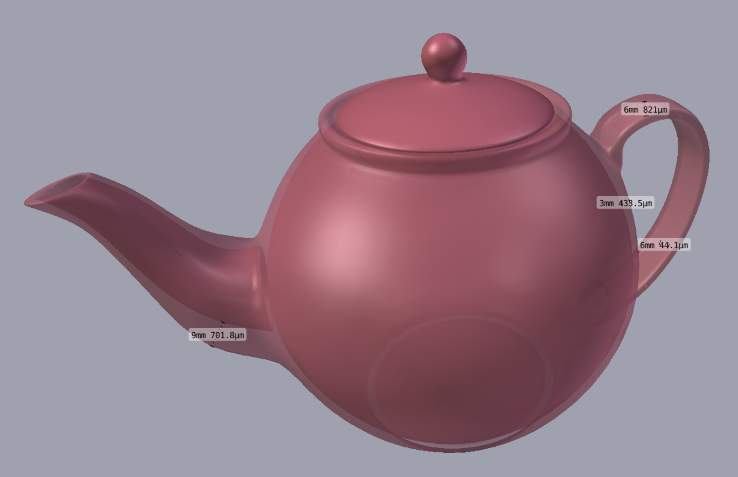
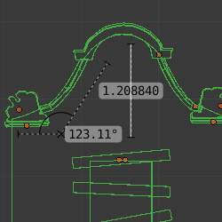

Ruler and Protractor¶
The ruler can be accessed from the toolshelf, once activated you can use the ruler to measure lengths and angles in the scene.

{kind=link}
例子 of the ruler and protractor.

{kind=link}
例子 using the ruler to measure thickness.
用法¶

Here are common steps for using the ruler.
- Activate the Ruler from the toolshelf.
- Click and drag in the view-port to define the initial start/end point for the ruler.
- Orbit the view and click on either end of the ruler to re-position it.
Holding
Ctrlenables snap to elements. - Click on the middle to measure angles.
- Press
Returnto store the ruler for later use orEscto cancel.
Note
Editing operations can be used while the ruler is running, however, tools like the knife cannot be used at the same time.
Note
Unit settings and scale from the scene are used for displaying dimensions.
Shortcuts¶
Ctrl-LMBAdds new ruler.LMBDrag end-points to place them, Hold Ctrl to snap, Hold Shift to measure thickness.LMBDrag center-point to measure angles, drag out of the view to convert back to a ruler.DeleteDeletes the ruler.Ctrl-CCopies the rulers value to the clipboard.EscExitsReturnSaves the rulers for the next time the tool is activated.